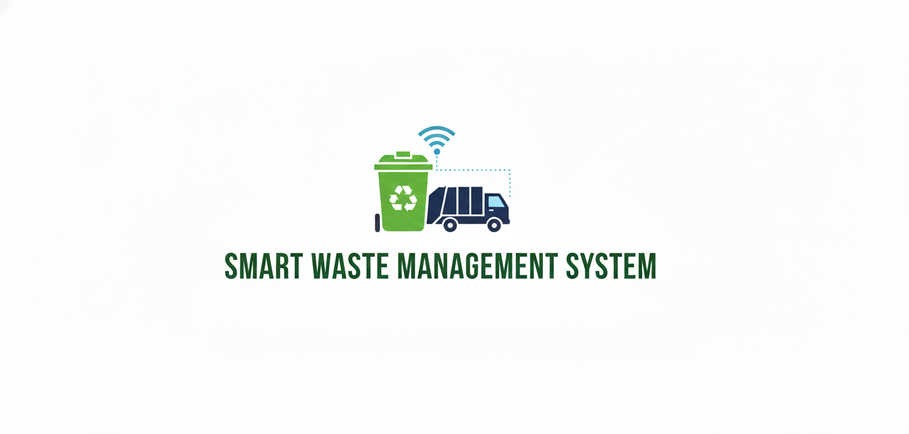
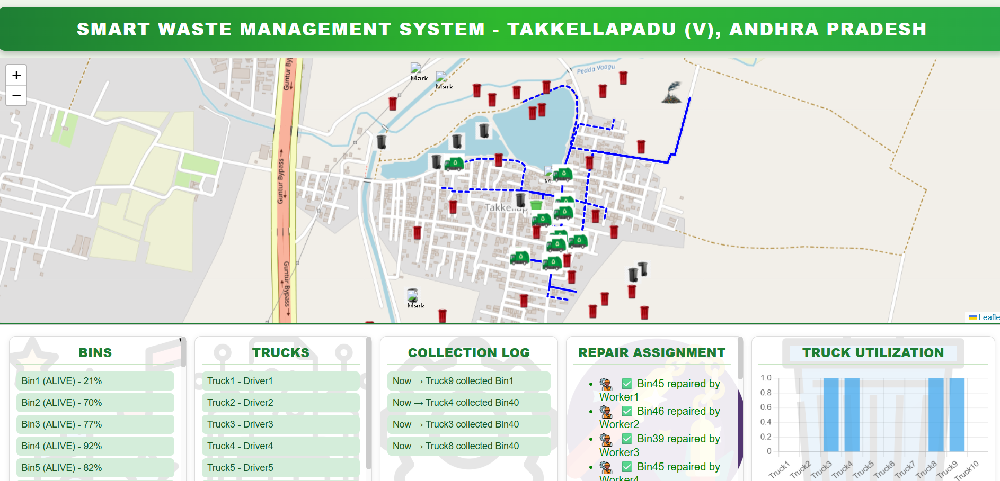

An intelligent municipal waste management system that simulates fill-level sensors inside smart garbage bins across urban zones. A Python Flask backend processes real-time telemetry, identifies overflow risks, and calculates fuel-efficient collection routes for municipal trucks.

